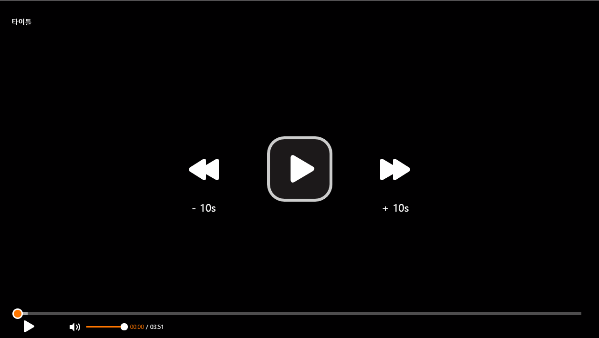

<div class="ui-g-12 ui-g-nopad content-sec">
  <div class="ui-g-12 ui-g-nopad page-title-sec">
    <a routerLink="/home"><i class="fas fa-home"></i></a> > <a routerLink="/settings/group-manager" (click)="refresh()">설정</a> > <span (click)="refresh()">프리셋 설정</span> > <span class="path" (click)="refresh()">플레이어 프리셋</span>
  </div>
  <p class="info-txt margin-bottom-20">클릭하여 삭제/추가 하실 수 있습니다.</p>
  <div class="ui-g-12 ui-g-nopad preset-container">
    <form [formGroup]="playerPresetForm" (ngSubmit)="onSubmit(playerPresetForm.value)" class="ui-g-12 ui-g-nopad">
      <fieldset>
        <div class="ui-g-2 ui-g-nopad button-area">
          <label for="bookmark" (click)="setPlayerPreset($event)">북마크</label>
          <label for="setting" (click)="setPlayerPreset($event)">설정버튼</label>
          <label for="nextVideo" (click)="setPlayerPreset($event)">다음 영상</label>
          <label for="playbackRate" (click)="setPlayerPreset($event)">배속버튼</label>
          <label for="loopPortion" (click)="setPlayerPreset($event)">구간반복</label>
          <label for="fullscreen" (click)="setPlayerPreset($event)">전체화면</label>
          <label for="cinemaMode" (click)="setPlayerPreset($event)">영화관화면</label>
          <label for="quality" (click)="setPlayerPreset($event)">화질선택</label>
          <label (click)="setPlayerPreset($event)">자막</label>
        </div>
        <div class="ui-g-8 ui-g-nopad player-view-area">
          
          <div class="overlay-area">
            <input type="checkbox" class="presetCheckbox" id="bookmark" formControlName="bookmark">
            
            <input type="checkbox" class="presetCheckbox" id="setting" formControlName="setting">
            
            <input type="checkbox" class="presetCheckbox" id="nextVideo" formControlName="nextVideo">
            
            <input type="checkbox" class="presetCheckbox" id="playbackRate" formControlName="playbackRate">
            
            <input type="checkbox" class="presetCheckbox" id="loopPortion" formControlName="loopPortion">
            
            <input type="checkbox" class="presetCheckbox" id="fullscreen" formControlName="fullscreen">
            
            <input type="checkbox" class="presetCheckbox" id="cinemaMode" formControlName="cinemaMode">
            
            <input type="checkbox" class="presetCheckbox" id="quality" formControlName="quality">
            
          </div>
        </div>
        <div class="ui-g-12 ui-g-nopad margin-top-40 btn-sec">
          <button type="button" class="btn margin-right-10" (click)="resetPreset()"><i class="fas fa-history"></i> 초기화</button>
          <button type="submit" class="btn"><i class="fas fa-check"></i> 적용</button>
        </div>
      </fieldset>
    </form>
  </div>
</div>

<p-confirmDialog width="500" #confirm>
  <p-footer>
    <button type="button" class="btn margin-right-10" (click)="confirm.accept()"><i class="fas fa-check"></i> 확인</button>
    <button type="button" class="btn" (click)="confirm.reject()"><i class="fas fa-times"></i> 취소</button>
  </p-footer>
</p-confirmDialog>

<p-dialog [(visible)]="isShowMessage" [width]="400" [modal]="true" [showHeader]="false">
  <p class="txt-center margin-top-15 margin-bottom-20">적용 완료 되었습니다.</p>
  <div class="txt-center">
    <button type="button" class="btn" (click)="isShowMessage=false;" label="confirm"><i class="fas fa-check"></i> 확인</button>
  </div>
</p-dialog>